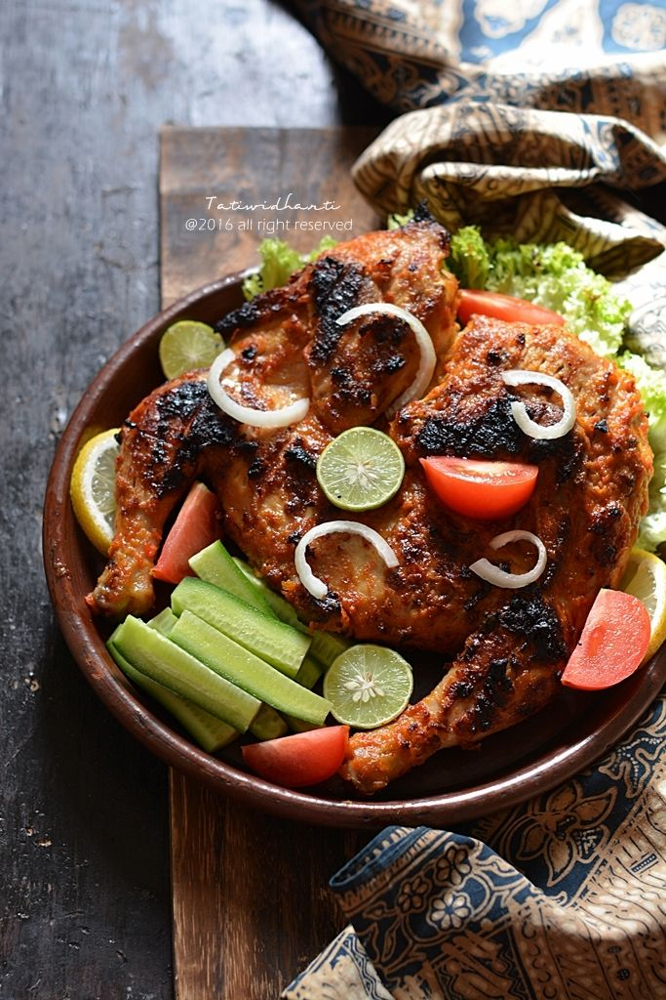

Snorkeling
Snorkeling di Pantai Senggigi menjadi salah satu aktivitas favorit wisatawan karena air lautnya jernih dengan terumbu karang yang indah dan beragam ikan tropis berwarna-warni. Lokasi snorkeling biasanya tidak jauh dari bibir pantai sehingga mudah dijangkau, bahkan bagi pemula. Ombak yang relatif tenang membuat pengalaman snorkeling di Senggigi terasa aman dan menyenangkan, sambil menikmati keindahan bawah laut khas Lombok.
Hiking
Hiking di Gunung Rinjani adalah pengalaman mendaki yang menantang sekaligus mempesona, karena jalurnya melewati hutan tropis, padang savana, hingga kawah besar dengan Danau Segara Anak di dalamnya. Pendakian biasanya memakan waktu beberapa hari, dengan rute populer dari Sembalun atau Senaru, dan setiap etape menawarkan panorama alam yang berbeda.


Wisata Kuliner
Ayam Taliwang adalah kuliner khas Lombok yang sangat terkenal, terutama di Kota Mataram. Hidangan ini berupa ayam kampung muda yang dibakar atau digoreng, kemudian dilumuri bumbu khas berbahan dasar cabai merah, bawang putih, terasi, dan rempah-rempah lokal yang menghasilkan cita rasa pedas, gurih, dan sedikit manis. Biasanya ayam Taliwang disajikan bersama plecing kangkung dan nasi putih hangat, menjadikannya paket makan lengkap yang menggugah selera.